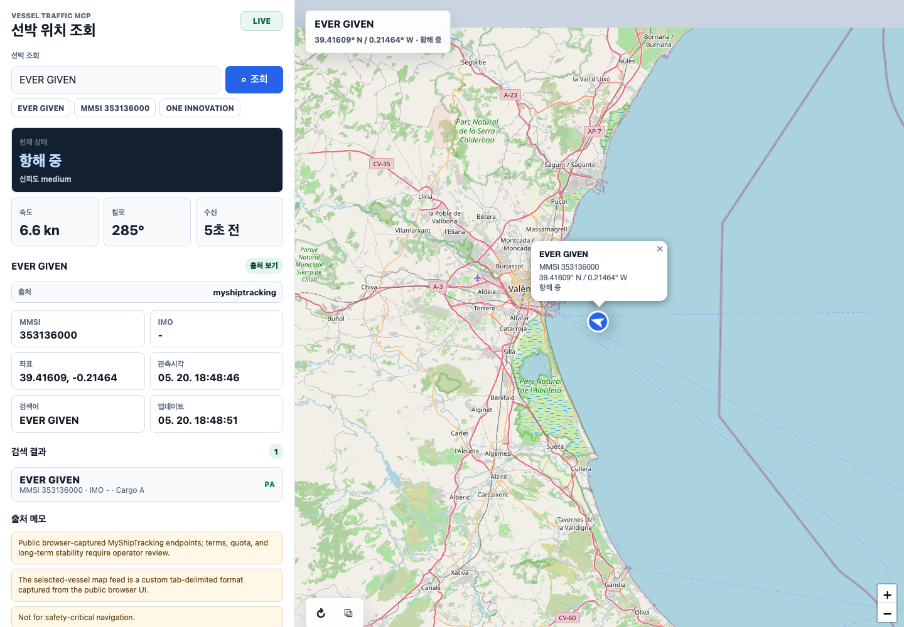

Resolve vessel names
Convert names, MMSI, IMO, callsigns, and B/L-style text into ranked vessel candidates with confidence and confirmation flags.
Read-only MCP server
Vessel Traffic MCP gives ChatGPT, Codex, Claude, Gemini, and other Model Context Protocol clients a normalized way to resolve vessel names, AIS-style positions, port calls, carrier schedules, vessel schedules, and delay context.

Convert names, MMSI, IMO, callsigns, and B/L-style text into ranked vessel candidates with confidence and confirmation flags.
Query latest known positions, recent tracks, area results, and port calls with source.provider, source.landingUrl, freshness, coverage, and caveats.
Search carrier schedules by port pair, vessel, carrier, cargo type, and date windows, then compare planned and estimated events.
{
"mcpServers": {
"vessel-traffic-mcp": {
"command": "npx",
"args": ["-y", "@tools-mcp/vessel-traffic-mcp"],
"env": {
"VESSEL_MCP_TRANSPORT": "stdio",
"VESSEL_MCP_ENABLE_PUBLIC_PROVIDERS": "myshiptracking,tradlinx"
}
}
}
}codex mcp add vesselTraffic -- npx -y @tools-mcp/vessel-traffic-mcp[mcp_servers.vessel-traffic-mcp]
command = "npx"
args = ["-y", "@tools-mcp/vessel-traffic-mcp"]
[mcp_servers.vessel-traffic-mcp.env]
VESSEL_MCP_TRANSPORT = "stdio"
VESSEL_MCP_ENABLE_PUBLIC_PROVIDERS = "myshiptracking,tradlinx"{
"type": "mcp",
"server_label": "vessel_traffic",
"server_url": "https://<your-public-host>/mcp",
"require_approval": "never",
"allowed_tools": ["search", "fetch", "vessel_search", "vessel_position"]
}A remote endpoint must be HTTPS and reachable by the OpenAI product you connect. Use OAuth or bearer auth when exposing private or paid-provider profiles.
{
"mcpServers": {
"vessel-traffic-mcp": {
"command": "npx",
"args": ["-y", "@tools-mcp/vessel-traffic-mcp"],
"env": {
"VESSEL_MCP_TRANSPORT": "stdio",
"VESSEL_MCP_ENABLE_PUBLIC_PROVIDERS": "myshiptracking,tradlinx"
},
"timeout": 30000
}
}
}Use Vessel Traffic MCP. What is the current known position of EVER GIVEN?
Resolve the vessel first if needed, then include:
- source.provider
- source.landingUrl
- observedAt and retrievedAt
- freshnessSeconds
- confidence and coverage caveats
- a short note that this is not for safety-critical navigation| Need | Tools | Notes |
|---|---|---|
| Search/fetch connector flow | search, fetch |
Read-only wrappers for search-style MCP clients and deep-research workflows. |
| Vessel identity | vessel_search, vessel_name_resolve, document_vessel_lookup |
Ranks MMSI/IMO candidates and marks ambiguous results. |
| AIS-style movement | vessel_position, vessel_area, vessel_track, port_calls |
Returns source, timestamp, freshness, coverage, and confidence metadata. |
| Schedules | carrier_schedule_search, vessel_schedule, schedule_delay_predict |
Carrier and vessel schedule surfaces with source attribution. |
| Provider setup | provider_status, data_sources, credential_profiles, provider_onboarding |
Shows safe manual BYOK setup. It never creates accounts or issues credentials. |